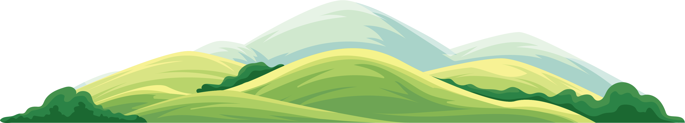
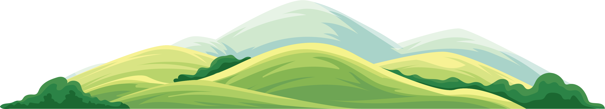

I'm Christopher.
a web designer.


I have been working in graphic design with BonoTom Studio full-time since June of 2015. Prior to that, I often dabbled in the world of graphic design on a freelance basis. Within the past few years, I've thrown myself into the world of web development and have been furthering my skills in that daily.
For over 12 years I've gained a plethora of experience in graphic and magazine design. I am fluent in Adobe inDesign, Photoshop, and Illustrator. Additionally, I've been a web designer for the past 3 years, including Wordpress, HTML, CSS and Javascript coding.
I love to cook and enjoy learning new techniques. My favorite foods are classic American, Asian, & Italian. My favorite cooking partner is my 4-year-old daughter.
If you have a new project in mind or are interested in a redesign of an existing publication or website, contact me for a free consultation.
CONTACT ME